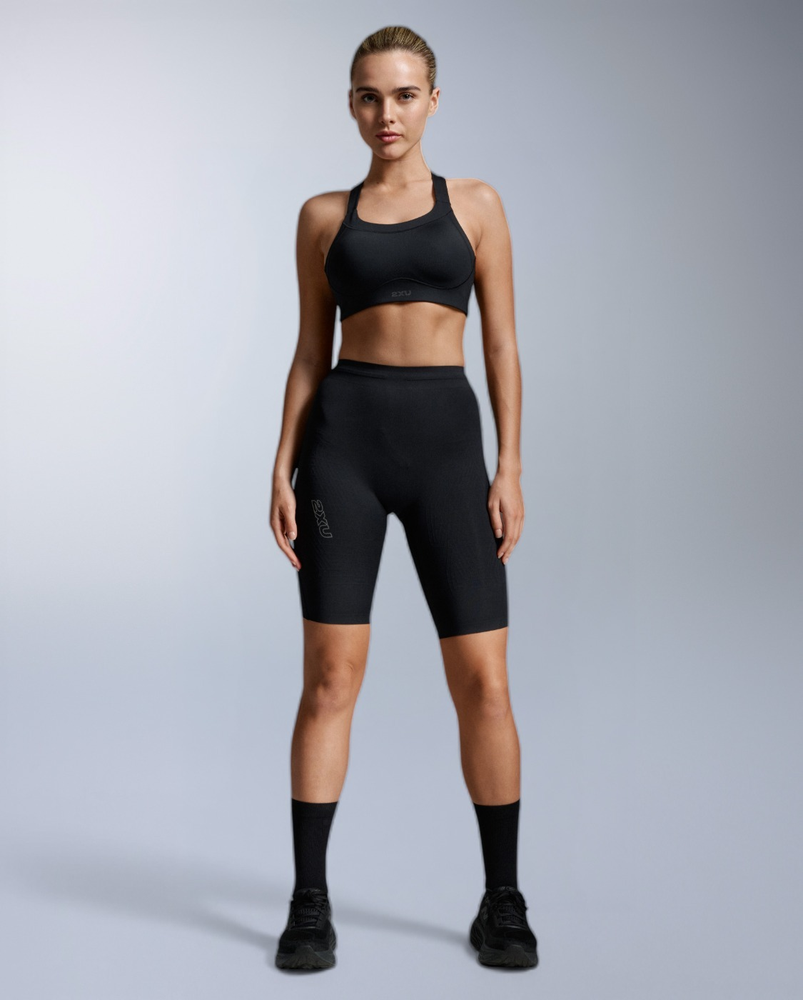
LIGHT SPEED
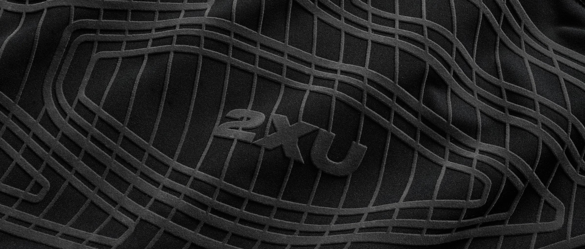
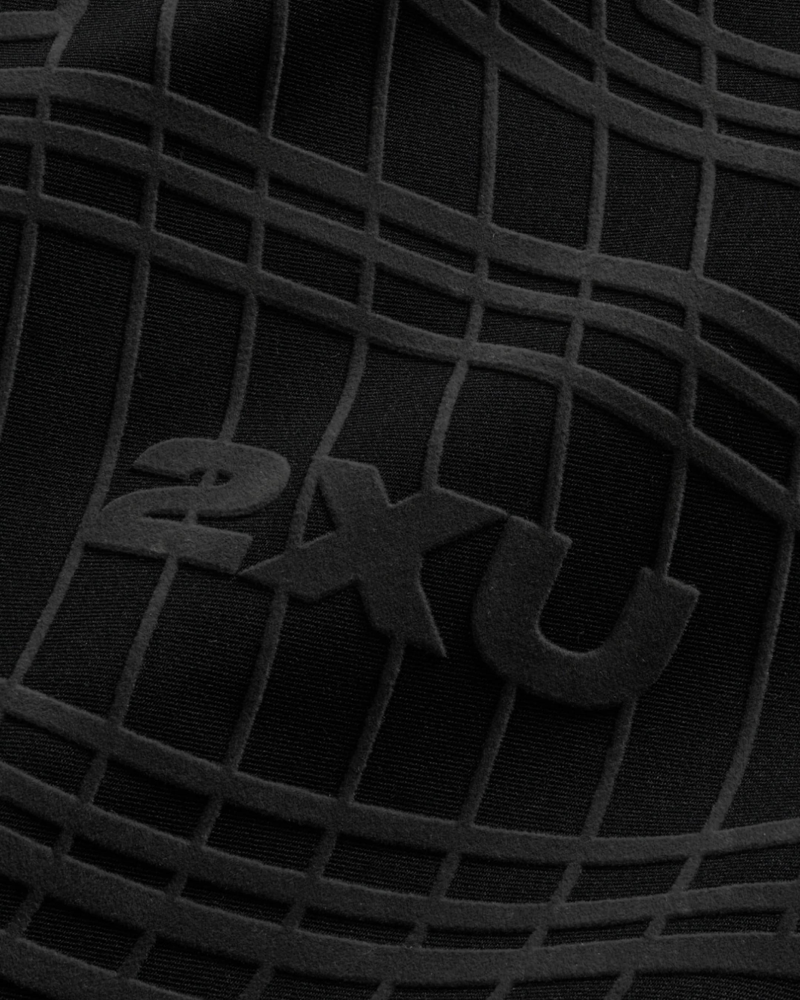
컴프레션은 단순한 타이트한 스포츠웨어가 아닙니다. 신체의 퍼포먼스를 높이도록 설계된 정밀 장비(Precision equipment)입니다.
스포츠 과학에 기반하여 타겟팅된 근육 지지력을 제공하는 2XU 컴프레션은 움직임을 위해 근육을 준비시키고, 활동 중 퍼포먼스를 향상시키며, 매 세션 후 회복을 가속화하도록 제작되었습니다.
제품보기
LIGHT SPEED
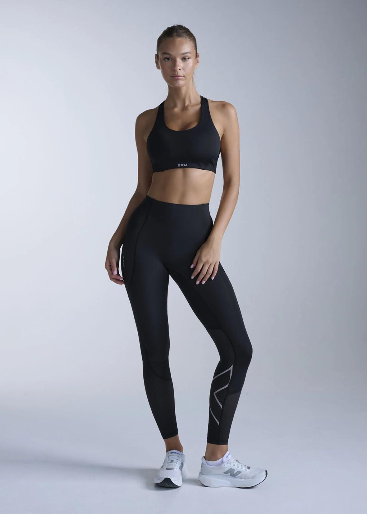
AERO
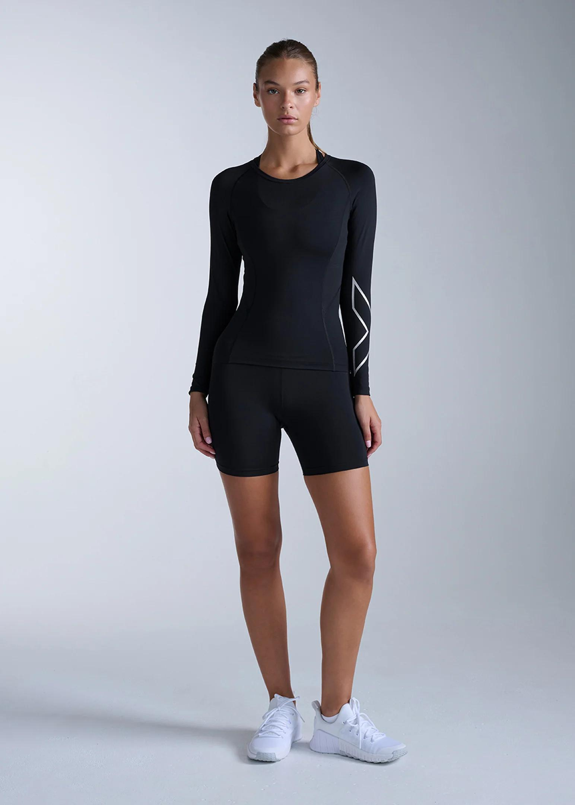
CORE
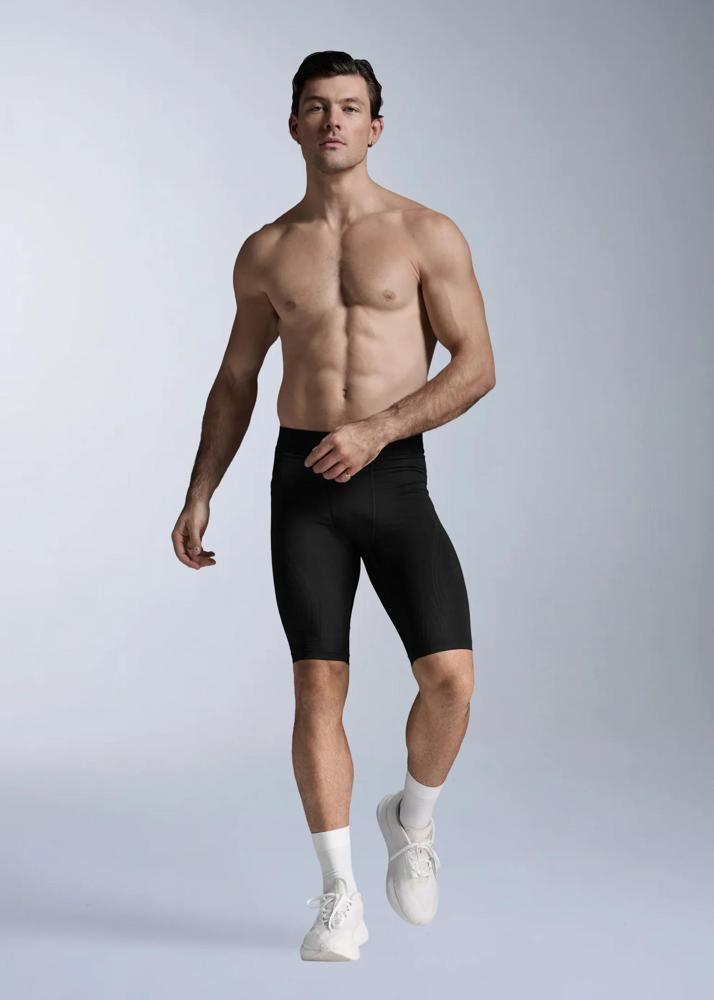
FORCE
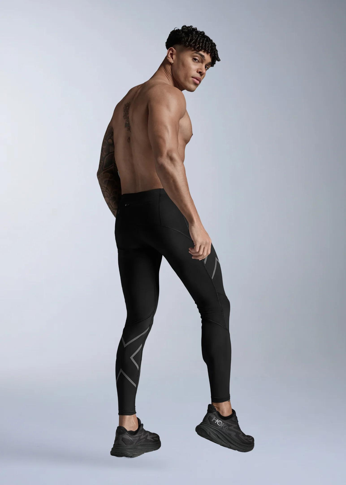
IGNITION
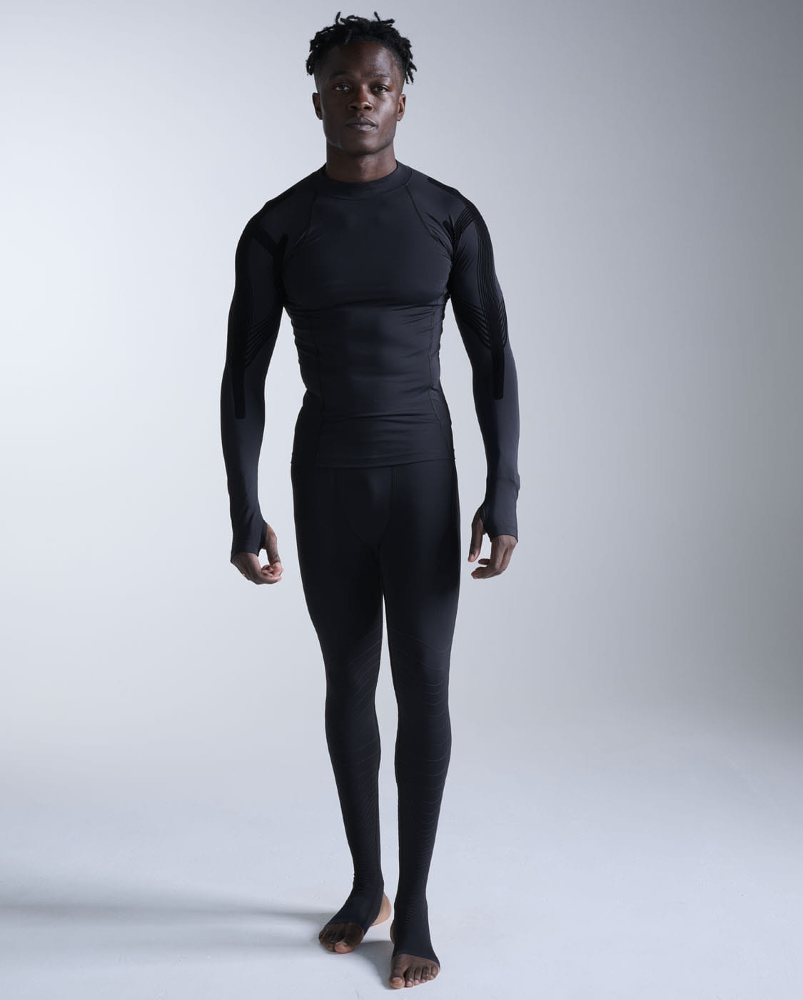
RECOVERY
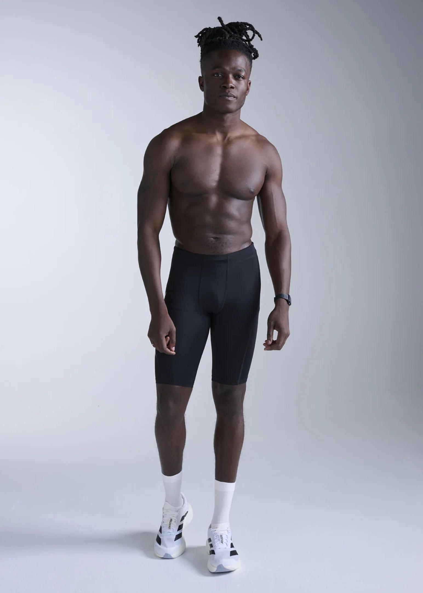
BASE LAYER
수십 년간의 연구에 따르면, 진정한 스포츠 컴프레션은 부상 위험을 줄이고, 퍼포먼스를 향상시키며, 회복 속도를 높입니다.
최고급 원사와 혁신적인 점진적 압박(Graduated compression) 프로파일을 갖춘 2XU 컴프레션은 일반 스포츠웨어를 넘어 움직이는 신체를 적극적으로 지원하도록 설계되었습니다.
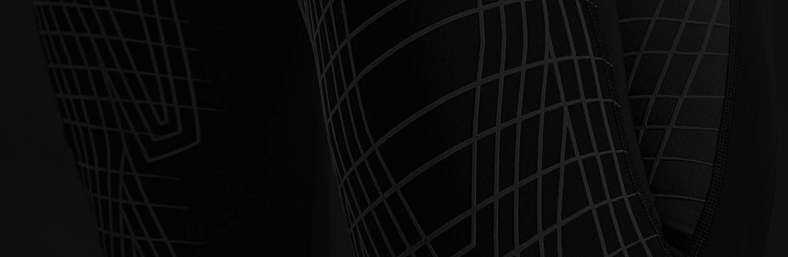
부상 위험 감소
빠른 근육 웜업 촉진
근육의 흔들림과 미세 파열 최소화
운동으로 인한 근육 손상 예방 지원
운동 능력 향상
근육을 고정하여 피로도 감소
신체 위치 및 밸런스 인지 능력 향상
활동 중인 근육으로의 산소가 포함된
혈류량 18% 증가 (AIS, 2017)
최고 출력(Peak power) 5% 향상
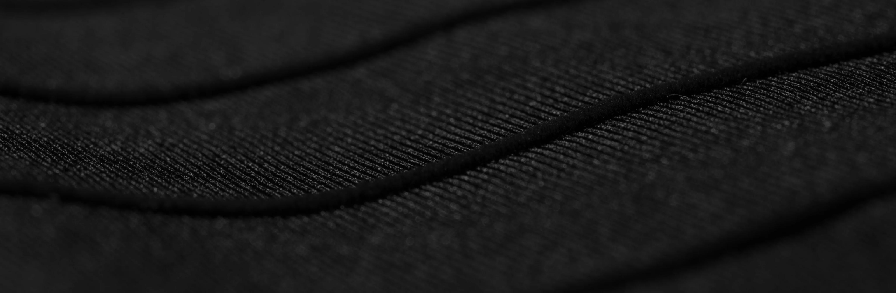
회복 속도 가속화
착용 부위의 붓기 감소
지연성 근육통(DOMS) 47% 감소 과학적 입증
독소의 림프 배출 지원
혈중 젖산 수치 감소율 기준 33%
더 빠른 회복 (AIS, 2017)
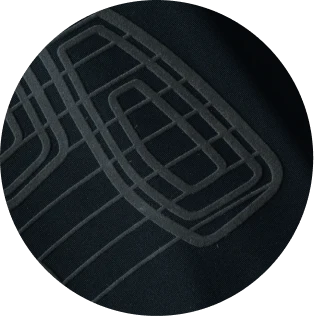
MCS (Muscle Containment Stamping)MUSCLE CONTAINMENT STAMPING (MCS)
주요 근육 그룹의 형태를 따라 맵핑되어 초강력 서포트를 제공하고 피로와 부상을 줄여줍니다.
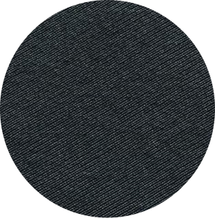
PWX FABRIC
최고급 원사로 제작된 혁신적인 원형 니트 구조로, 가볍고 강력한 360도 근육 지지력을 제공합니다.
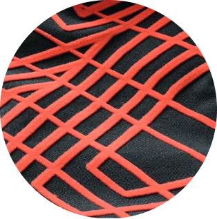
HEIQ SMART TEMP
체온 상승에 반응하여 동적인 쿨링 효과를 제공하는 제2의 피부와 같이 작용합니다.
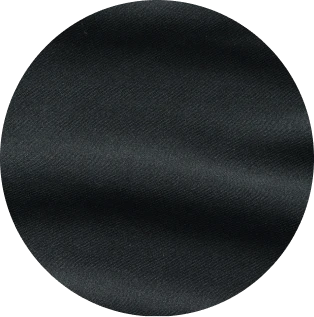
SLX FABRIC
초미세 원사로 제작되어 고급스러운 무광택 외관과 단단한 고정력, 매끄러운 마감을 제공합니다.
A. 운동 중에는 근육을 안정화하고 진동을 줄이며, 신체 인지 능력과 움직임의 효율성을 향상시킵니다. 땀을 흡수하고 체온 조절을 도우며, 자외선 차단 기능을 제공합니다. 운동 후에는 혈액 순환과 회복을 지원하고, 근육통과 붓기를 줄일 수 있으며, 훈련 세션 사이의 신체 회복을 돕습니다.
A. 컴프레션은 ‘원사이즈(One-size-fits-all)’가 아닙니다. 올바른 제품 선택은 언제 착용하는가(퍼포먼스 훈련용, 훈련 및 회복 겸용, 회복 전용), 어떤 종류의 움직임을 하는가, 내 몸이 현재 무엇을 필요로 하는가에 따라 달라집니다.
A. 컴프레션 원단은 지지력, 유연성, 내구성의 균형을 맞추도록 설계된 기술적 소재입니다. 일반적으로 고신축성 원사와 360도 스트레치를 제공하는 원형 니트 구조를 사용하여, 일관된 압박력을 유지하면서 몸의 움직임에 완벽하게 맞춰집니다.
A. 네. 컴프레션 의류의 성능은 원사 유형, 원단 밀도, 니트 구조, 의류의 봉제 구조 등 여러 요인에 따라 달라집니다. 이 모든 요소들이 결합되어 의류의 지지력, 통기성, 내구성을 결정합니다.
A. 아닙니다. 훈련과 경기 중에 가장 많이 사용되지만, 컴프레션 의류는 여행, 운동 후 회복, 장시간 서 있거나 앉아 있을 때, 그리고 일상적인 혈액 순환 보조용으로도 훌륭하게 착용할 수 있습니다.
A. 컴프레션 의류는 단단하고 지지력이 느껴지되 신체를 옥죄거나 제한해서는 안 됩니다. 몸에 완벽하게 밀착되어야 하며, 전체적인 가동 범위를 허용하고, 살이 집히거나 저린 느낌이 없어야 합니다. 정확한 사이즈를 선택해야 의도한 압박 효과를 얻을 수 있습니다.
A. 일반 레깅스는 주로 편안함과 스타일을 위해 디자인되었습니다. 반면 컴프레션 타이츠는 타겟팅된 압박(Targeted compression)을 통해 근육, 혈액 순환, 그리고 회복을 적극적으로 지원하도록 설계(Engineered)된 정밀 장비입니다.
A. 네. 제대로 설계되고 몸에 맞게 착용된 컴프레션 타이츠는 혈액 순환을 돕고, 근육통을 줄이며, 회복을 촉진하여 더 효율적으로 움직이고 회복할 수 있도록 도와줍니다.
A. 아닙니다. 2XU 컴프레션 타이츠는 모든 활동 수준에 맞춰 설계되었으며, 훈련, 레저, 회복, 여행 등 목적에 따라 다양한 압박 레벨을 제공합니다.